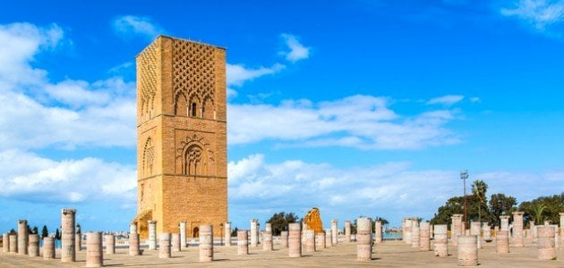
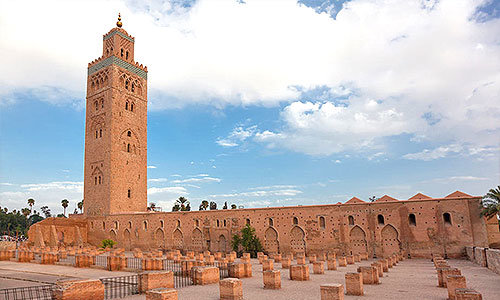

صومعة حسان
صومعة حسان التاريخية التي تم بناؤها في العصر الموحدي على يد السلطان يعقوب المنصور في مدينة الرباط...

جامع الكتبية
جامع الكتبية المراكشي، وهو من المعالم الإسلامية الراسخة في مدينة مراكش ويتميز بمئذنته العالية...

شالة
موقع شالة الأثري بمدينة الرباط، وهو مكان يجمع بين الأطلال الرومانية والمعالم الإسلامية...

وليلي
موقع وليلي الأثري قرب مدينة مكناس، وهو من أبرز المواقع الأثرية الرومانية في المغرب...